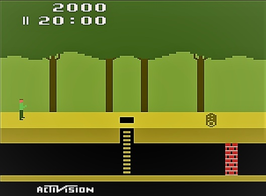

'Terping
I call this section "Terping" (short-hand for "Interpreting") rather than "Emulating" because you often hear about people writing "CHIP-8 emulators" but that's not quite what most such projects are actually doing.
Let's say I want to run the original Atari game Pitfall.
There's only one problem: I don't have an Atari 2600 to run it on. I could, of course, just re-implement Pitfall to run on the system I want it to. That, of course, would not be running the original but, rather, a derivative based on it. Instead, if I want to run the original on, say, my PC, I would need to emulate the environment in which the original ran.
In the case of an emulator, I would be choosing not to re-implement the game Pitfall for my native system. Instead, I would re-create the environment with a computer program which allows me to run the original machine code of Pitfall. (You can see some of that original code if you want!) A benefit of this is that it won't just allow me to run that game, but also any other game developed for the Atari platform.
In the case of Atari, if you wrote an emulator, you would be writing a software implementation of what was a physical system. In the case of something like the CHIP-8 or the Z-Machine, you are implementing something that was never a real machine. These were, instead, virtual machines. The CHIP-8 may have run on a COSMAC VIP, for example, but you don't need to emulate the COSMAC VIP to run a CHIP-8. Similarly, the Z-Machine may have run on a Commodore 64, but you don't need to emulate a Commodore 64 to run a Z-Machine.
So let's be clear what the CHIP-8 was: an interpreted programming language/virtual machine specification, not a physical hardware system. It was designed to run on top of existing hardware like the COSMAC VIP, Telmac 1800, and other RCA 1802-based systems. The CHIP-8 "system" provided a standardized, higher-level interface that abstracted away the specifics of the underlying hardware.
When you implement CHIP-8 today, you're creating an interpreter that directly executes CHIP-8 bytecode, just like the original CHIP-8 interpreters did on those 1970s machines. You're implementing the CHIP-8 virtual machine specification, not emulating any particular piece of hardware. An actual emulator would simulate the COSMAC VIP's hardware components — its RCA 1802 CPU, memory layout, I/O systems, etc. — and then run the original CHIP-8 interpreter program within that emulated environment.
This distinction matters because it affects how you approach the implementation. As a CHIP-8 interpreter, you're focused on faithfully implementing the CHIP-8 instruction set and system behavior, rather than worrying about cycle-accurate timing, hardware-specific quirks, or low-level hardware details of the host machines.
Thus, "CHIP-8 interpreter" is the technically accurate term, even though "CHIP-8 emulator" has become common parlance in retro computing circles.
Concepts
Let's say you're considering interpretation and specifically the CHIP-8. You're (wisely!) trying to make sure you understand the fundamentals of interpretation first. The key fundamental is that the goal is to search for opcodes which are, effectively, machine language instructions.
Is it possible to show what a simple CHIP-8 program would look like if it was written purely with the opcodes? Absolutely! Here's a simple program that displays a sprite on screen:
Address Opcode Assembly Description
0x200: 0xA220 LD I, 0x220 Load address 0x220 into I register
0x202: 0x6000 LD V0, 0x00 Load 0 into V0 (X coordinate)
0x204: 0x6105 LD V1, 0x05 Load 5 into V1 (Y coordinate)
0x206: 0xD015 DRW V0, V1, 5 Draw 5-byte sprite at (V0,V1)
0x208: 0x1208 JP 0x208 Jump to 0x208 (infinite loop)
Sprite data at 0x220:
0x220: 0xF0 (11110000 binary) - Top of character
0x221: 0x90 (10010000 binary)
0x222: 0x90 (10010000 binary)
0x223: 0x90 (10010000 binary)
0x224: 0xF0 (11110000 binary) - Bottom of character
What does that do?
- Sets the I register to point to sprite data at memory address 0x220.
- Sets coordinate 0 in register V0.
- Sets coordinate 5 in register V1.
- Draws a 5-byte tall sprite.
- Loops forever.
The sprite data is shown and it would look like the number "0" when displayed.
Any interpreter would essentially follow four steps.
- Fetch the opcode at the program counter (starting at 0x200)
- Decode it (e.g., 0xA220 = "load immediate into I register")
- Execute the instruction
- Increment the program counter and repeat
Each opcode is exactly 2 bytes in CHIP-8, and the program counter typically advances by 2 each cycle (except for jumps). This is the fundamental fetch-decode-execute cycle that all emulators implement.
Now, I said above that that CHIP-8 was an interpreted language that ran on a virtual machine. In that case, what would the above program look like if it was written in that CHIP-8 language?
Well, the opcodes I showed you are the CHIP-8 language. CHIP-8 didn't have a separate high-level programming language that compiled down to those opcodes. Those opcodes were the programming interface. Back in the 1970s, programmers would write CHIP-8 programs via a couple of steps.
First, they might hand-assemble using mnemonics, by which I mean human-readable versions of the opcodes.
LD I, sprite_data ; Load sprite address into I
LD V0, 0 ; X coordinate = 0
LD V1, 5 ; Y coordinate = 5
DRW V0, V1, 5 ; Draw 5-byte sprite
JP loop ; Jump back to loop
sprite_data:
DB 0xF0, 0x90, 0x90, 0x90, 0xF0 ; Sprite data for "0"
They could then manually convert these mnemonics to the hex opcodes I showed earlier. Finally, they would enter those hex values directly into memory using hexadecimal keypads.
This is a fundamental point. There wasn't a separate "CHIP-8 source language" that looked like C or BASIC. The opcodes were the language; just represented in a more human-friendly mnemonic form during development.
I bring this up because certain modern CHIP-8 development tools do provide assemblers that let you write with labels and mnemonics, but historically, many programs were written by directly calculating and entering the hex opcodes. It was a very low-level, hardware-close way of programming that was typical of early microcomputer systems.